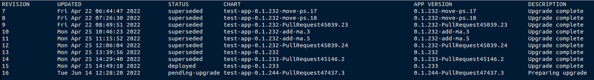
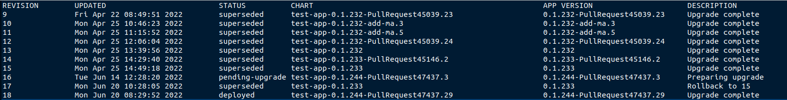
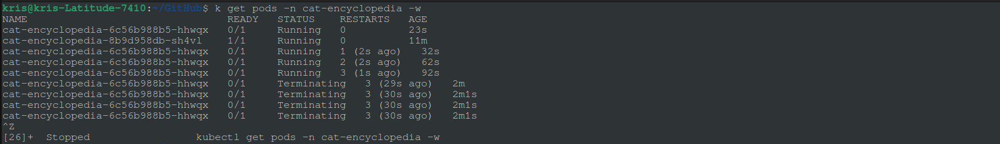
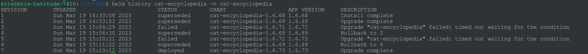

Handling Failed Helm Upgrade Due to Another Operation in Progress

Introduction
Sometimes things may go wrong, also during ugprade of the application that is deployed to a Kubernetes cluster with Helm. When something goes wrong, you fix it and re-try a deployment with the new fix included. But then deployment operation fails with following error message:
Error: UPGRADE FAILED: another operation (install/upgrade/rollback) is in progress
So, what does it mean and how can you fix it? Let’s find out!
Controlled, manual fix
This happens typically when Helm attempts to roll out a new revision of an application and then something goes wrong in the process, like a bug in an application itself or an issue inside the Kubernetes cluster, which causes the new deployment to never get completed. This faulty deployment becomes dangling, therefore preventing all the future deployments to be rolled out. You can easily check the latest deployment status by retrieving the history of application deployments with helm history.
It will look something like this:
PS C:\> helm history test-app -n test-app

As you can see in the last entry there, a deployment with revision 16 has had status pending-upgrade since June, 14th which is almost a week long at the time of writing this blog post. No application can take such a long time to deploy (I hope)!😸 So let’s fix it!
Please note that even with the dangling deployment like this, Helm upgrade operation performs a rolling update which means that the previous version of your applicaiton will still be running until the rollout of the new version is confirmed to be healthy and available. You can easily check that by running
kubectl get pods -n [app_namespace]command.
In order to fix this error all you need to do is to perform a rollback with helm rollback [release_name] [revision_number] -n [app_namespace] so that the latest stable version of the deployment will become the active one and the dangling deployment will be cancelled. In the example above deployment with revision 15 is the one that is known to be stable and was successfully rolled out before so we can perform a rollback like this:
PS C:\> helm rollback test-app 15 -n test-app
Rollback was a success! Happy Helming!
If we get history of Helm deployments once again, we can see that the dangling release got rolled back under revision 17 to the latest stable release which now gets next active revision number 18 (you can see that the app version for revision 15 and 18 is the same which is expected):
PS C:\> helm history test-app -n test-app

If we now re-try deployment of a new version of the application, the upgrade failed error will not appear anymore and the new deployment should succeed.
helm rollback is a useful command which you can also use to roll back to the latest stable release in case you discover issues during testing of your application. You can read more about it here: Helm Rollback
Automatic fix
There’s also a way you can do the rollback automatically, as part of the helm upgrade command. All you need to do is to provide an additional parameter, --atomic which will automatically perform the rollback in case of the faulty upgrade. By setting --atomic parameter, --wait parameter will be set automatically (value defaults to the value of --timeout parameter which is 5 minutes by default, unless overriden), but it can be overriden if you need to increase/decrease the time to wait for the upgrade operation.
Below you can see an example of a helm upgrade command with --atomic parameter: the faulty deployment is being terminated automatically once the helm upgrade operation wait time is reached and instead of dangling deployments we can see rollback operations happening when we run helm history command.
PS C:\> helm upgrade cat-encyclopedia -n cat-encyclopedia --atomic --timeout 1m
 
You can read more about helm upgrade command here: Helm Upgrade
Thanks for reading and till next tech tip 😻